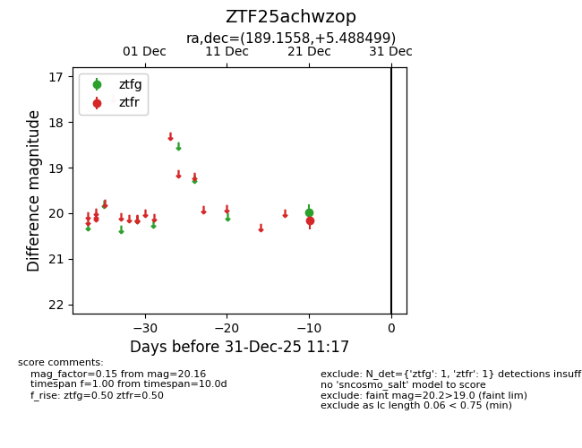
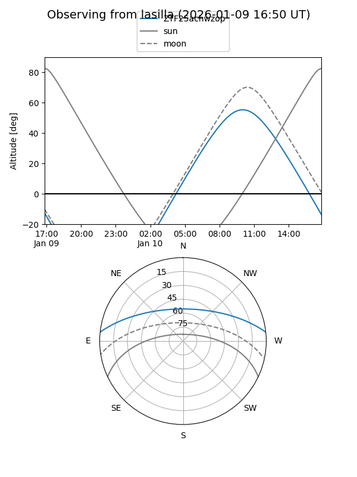
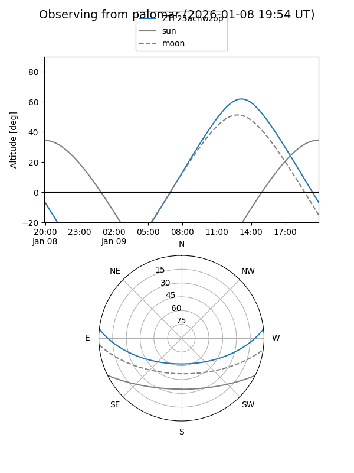

ZTF25achwzop
Target ZTF25achwzop at 2026-01-09 12:49
Aliases and brokers:
FINK: link
Lasair: link
ALeRCE: link
alt names
ZTF25achwzop (ztf,fink_ztf)
Coordinates:
equatorial (ra, dec) = 189.1558,+5.48850
equatorial (HMS+DMS) = 12:36:37.38,+05:29:18.60
galactic (l, b) = (293.0159,+68.07456)
Flags:
Photometry:
last ztfg=19.98, ztfr=20.16
1 ztfg, 1 ztfr detections
Lightcurve

Visibility


Additional plots